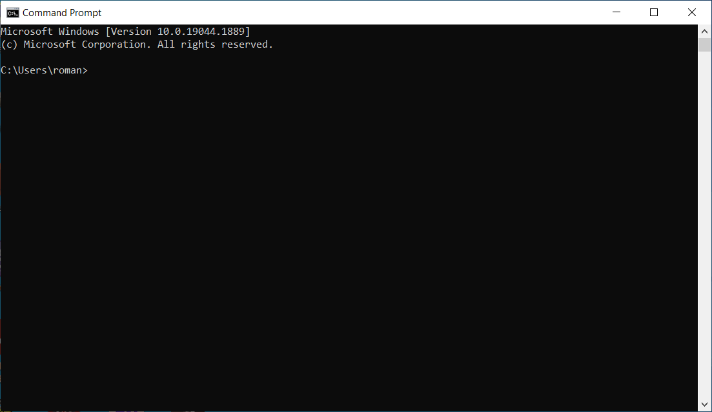

|
PDBsum1 Installation Instructions
1. Download PDBsum1 (v.1.0.1)
You can obtain the latest version (v.1.0.1) of the PDBsum1 programs here:
 |
|
|
PDBsum1 programs
Click on the icon on the left to download the pdbsum1.zip
file which contains the PDBsum1 executables and associated
files.
|
2. Install the programs
Move pdbsum1.zip to an appropriate location. On Windows, for
example, this might be the C:\ drive. Then unpack as follows:
a. Linux and mac
Unzip the file as follows:
unzip pdbsum1.zip
This will create a directory called
pdbsum1, and various subdirectories beneath, containing all the
necessary files.
b. Windows
Right-click on the file's icon and select
Extract All. When prompted, choose to
extract to C:\, or wherever else you would like to store the
programs.
A directory called pdbsum1 will be created containing all
the necessary files.
3. Check the executables
It is a good idea to check whether the installed executables are
compatible with your operating system. If not, you can recompile the
programs from the supplied source code, as described shortly.
a. Linux and mac
To perform the check on linux or mac, open a terminal window and go to
the appropriate executables directory:
- linux
cd [fullpath]/pdbsum1/exe_linux
- mac
cd [fullpath]/pdbsum1/exe_mac
Then type:
./pdbsum1
If all is OK, you will see the following message:
Usage is:
pdbsum1 {file [pdb_code] | -l dataset.lst} [-nomaxchn] [-help]
where
* file = Name of single PDB file to be processed
* pdb_code = Optional 4-character identifier
* -l dataset.lst = Name of file listing PDB files to be processed
* -nomaxchn = Clefts to be generated even if more than 4 chains in structure
* -relinks = Make all image links relative
If not, you will see something line:
./pdbsum1: Exec format error. Binary file not executable.
or
'.\pdbsum1' is not recognized as an internal or external command, operable program or batch file.
In which case, you will need to recompile the programs as described below.
b. Windows
For Windows, you need to open a "Command Prompt" window. This is the
window you will use to run PDBsum1. To open it, enter
"command" into the Windows search box at the bottom left of the
screen:

Then, click on the "Command Prompt" app:

And you will get the Command Prompt window:

You can now enter the required commands into this window.
To check whether the installed executables are
compatible with your operating system go to the exe_win
directory. If you installed the programs in C:\, the commands will be:
C:
cd C:\pdbsum1\exe_win
If you installed the program elsewhere, then the path in the second
command will need to be changed accordingly. For example, if you uzipped
the programs into C:\Users\yourname, the second command becomes:
cd C:\Users\yourname\pdbsum1\exe_win
Then type::
.\pdbsum1
If all is OK, you will see the following message:
Usage is:
pdbsum1 {file [pdb_code] | -l dataset.lst} [-nomaxchn] [-help]
where
* file = Name of single PDB file to be processed
* pdb_code = Optional 4-character identifier
* -l dataset.lst = Name of file listing PDB files to be processed
* -nomaxchn = Clefts to be generated even if more than 4 chains in structure
If not, you will see something line:
./pdbsum1: Exec format error. Binary file not executable.
or
'.\pdbsum1' is not recognized as an internal or external command, operable program or batch file.
In which case, you will need to recompile the programs as described in
the next section.
4. Recompiling the programs
If your check in the previous section gives you an error, you can
recompile the programs from this same directory by typing:
source ../scripts/compile.linux - for linux
or
source ../scripts/compile.mac - for mac
For Windows, you will need to have a linux-like environment such as
cygwin or Msys2 installed with a C and gfortran
compiler, or make use of the Visual Studio build tools. The equivalent
command from the exe_win directory will then be:
source ../scripts/compile.win
Contact if you have any problems,
stating the version of the operating system that you have.
5. Download required external packages
PDBsum1 requires a number of 3rd-party packages to run. These
are listed below and must be installed or the programs will not be
able to run properly. If your system does not already have them, a
Google search will help you to find where to obtain them. On mac,
you can use Homebrew (https://brew.sh) to install them all.
- PyMOL - There are a number of versions of this program
available. Many are free - or are available for free as educational
versions. Any version from v.0.99 upwards is fine.
- ImageMagick convert - PDBsum1 contains many images,
and the bulk of the image conversion is performed by
the convert utility in the ImageMagick package, which is
available from:
https://imagemagick.org/script/download.php
Note that, if during running PDBsum1 you get an error of the form:
convert: attempt to perform an operation not allowed by the security policy
`PS' @ error/constitute.c/IsCoderAuthorized/408.
you may need to make the change to the ImageMagick policy.xml file, as
described in:
https://stackoverflow.com/questions/52998331/imagemagick-security-policy-pdf-blocking-conversion
- wget - This is a tool for downloading files from the web
and is used by PDBsum1 to retrieve a protein's UniProt data and Pfam
domains, where relevant.
- On linux systems wget is likely already part of
your installation. You can check whether you have it by
typing:
which wget
If this doesn't find the program, use Google to learn how to
install it.
- For Windows systems, the following link will tell you how to
get wget:
https://builtvisible.com/download-your-website-with-wget/
Save the file in your "C:\Program Files" directory in, say, a
subdirectory called wget.
- ps2pdf - This is a utility for converting PostScript files
to PDF and comes as part of the Ghostscript package:
https://www.ghostscript.com/releases/gsdnld.html
If you are running on Windows, you will need to update your computer's
"PATH" variable to include the Ghostscript bin
and lib directories. The former might have already been done
automatically for you during installation.
To update your "PATH", follow the instructions applying to your
version of Windows, as given here:
https://www.computerhope.com/issues/ch000549.htm
The paths you need to add will be of the form:
- C:\Program Files\gs\gs9.56.1\bin
- C:\Program Files\gs\gs9.56.1\lib
where the gs9.56.1 is the Ghostscript version and will
depend on which version you have installed.
Once the path has been set, you can test it is correct by typing the name of the application
file in the bin directory - eg gswin64. If the path is right,
you will see a new window open with a "GS>" prompt. Close the window
by entering "quit".
5. Download optional packages
The following packages are recommended for download.
- RasMol - This was one of the first molecular viewers
developed and is still probably the simplest to use, with a fairly
intuitive set of commands. Many of the analyses in PDBsum1
(eg beta turns, protein-ligand interactions) can only currently be
viewed in 3D using RasMol, so it is recommended you install
it.
- LigPlot+ - This is a program for plotting, and then
interactively editing, schematic diagrams of protein-ligand
interactions. The Ligands tab on a PDBsum1 page includes a
LIGPLOT diagram. If you have LigPlot+ installed, you can
click on the LigPlot+ icon to load the diagram into this
program for modifying, printing, etc.
The program is freely available to academic institutions. Further
information can be found at:
LigPlot+ home page
6. Editing the parameter file
Before you can run PDBsum1, you need to tell the program where
certain things are located so that it can find them. This is done
by editing a simple text file called CATHPARAM, located in the
directory:
pdbsum1/params
Only six parameters need to be edited, as shown in green below:
|
linux example
|
|
Windows example
|
###########################################################################
#
# Paths and directories for PDBsum1
#
###########################################################################
#
#-- Operating system: linux/win/mac
#
OPERATING_SYSTEM = linux
#
#-- Location of installed PDBsum1 system and subdirectories
#
PDBSUM1_DIR = /nfs/userapps/pdbsum1
#
#-- Directory where the results are to be written
#
PDBSUM1_RESULTS_DIR = /nfs/data/pdbsum1
#
#-- Paths to required external software (put NONE if not available)
#
CONVERT_EXE = /usr/bin/convert
PS2PDF = /usr/bin/ps2pdf
PYMOL_EXE = /nfs/research1/software/Linux_x86_64/bin/pymol
WGET = /usr/bin/wget
|
|
|
###########################################################################
#
# Paths and directories for PDBsum1
#
###########################################################################
#
#-- Operating system: linux/win/mac
#
OPERATING_SYSTEM = win
#
#-- Location of installed PDBsum1 system and subdirectories
#
PDBSUM1_DIR = C:\PDBsum1
#
#-- Directory where the results are to be written
#
PDBSUM1_RESULTS_DIR = C:\Users\user\data\PDBsum1
#
#-- Paths to required external software (put NONE if not available)
#
CONVERT_EXE = "C:\Program Files\ImageMagick-7.1.0-Q16-HDRI\convert"
PS2PDF = "C:\Program Files\gs\gs9.56.1\lib\ps2pdf"
PYMOL_EXE = "C:\Program Files (x86)\PyMOL\PyMOLWin.exe"
WGET = "C:\Windows\System32\wget"
|
|
The parameters you need to define are:
- OPERATING_SYSTEM - This should be
linux,
mac, or
win, and tells the programs which set of
executables to use.
- PDBSUM1_DIR - This defines the
directory where the PDBsum1 programs are installed. The
correct directory will contain the following
subdirectories: compile, data, docs, etc.
- PDBSUM1_RESULTS_DIR - This tells PDBsum1
the name of the directory where it is to write all its output
files. This directory must exist, so make sure you create it before
running the program.
- CONVERT_EXE - The full path to the
ImageMagick convert image conversion program. Note for
more recent versions of ImageMagick, replace convert with
magick. You will need V.1.0.1 of PDBsum1 or later.
- PS2PDF - The path of the ps2pdf
utility that converts PostScript files to PDF.
- PYMOL_EXE - The path to the PyMOL
executable.
- WGET - The path of wget, which
downloads files from the web.
7. Script for RasMol
Many of the PDBsum1 analyses can be viewed in 3D using
the RasMol molecular viewer. These include the structure as a
whole, protein-ligand interasctions, and individual ProMotif motifs.
PDBsum1 generates RasMol scripts to display these
correctly. However, to view them needs a little set-up. There are two
scripts in the pdbsum1/scripts directory to help you. Both are
called rasscriptstart. The one with the .scr extension
is for use on linux or mac, while the .bat one is for Windows
machines. They are:
Operating
system
|
|
File name
|
|
Contents
|
|
linux/mac
|
|
rasscriptstart.scr
|
|
#!/bin/csh
xterm -e /software/bin/rasmol -script $1
|
|
windows
|
|
rasscriptstart.bat
|
|
"C:\Program Files (x86)\RasWin\raswin.exe" -script "%~1"
|
Edit the appropriate file to change the RasMol path to whatever
it is on your computer.
Once you have installed all the required programs, and edited
the CATHPARAM file as described above, you are ready to start
running PDBsum1.
Instructions can be found in:
PDBsum1 Manual
|